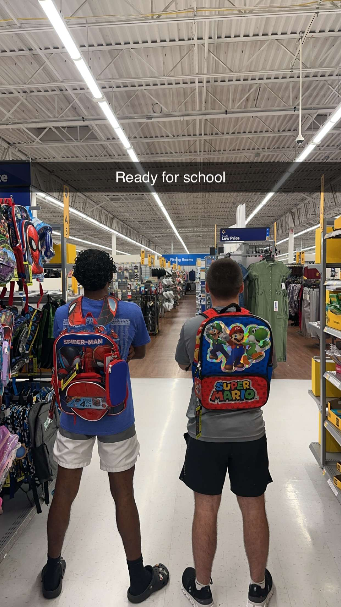
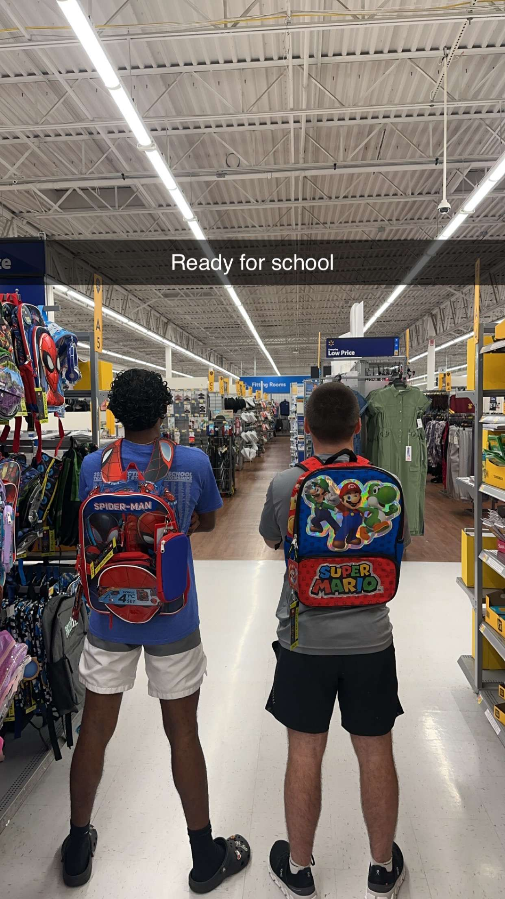

There is a lot to know about myself and my different skills, activities, and background. Growing up I was born in Seymour Connecticut in a family of three raised by parents from the strong descent of Jamaica and other Caribbean islands. I always had an interest in football and track in middle and high school. I love putting on college football and the NFL in the fall. But at the time I was too afraid to play football so I started to run track and fell in love with it. I am trying to walk on at the moment for track at Uri but if not do club and get an on-campus job as well. Other hobbies that I have are going to the gym, running, and hanging out with friends. But going more towards my major of computer science I also have an interest in building computers and programming from my internship I did in the summer for the past couple of years. After I graduate I want to major in computer programming or software development.
 
